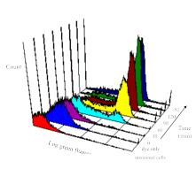
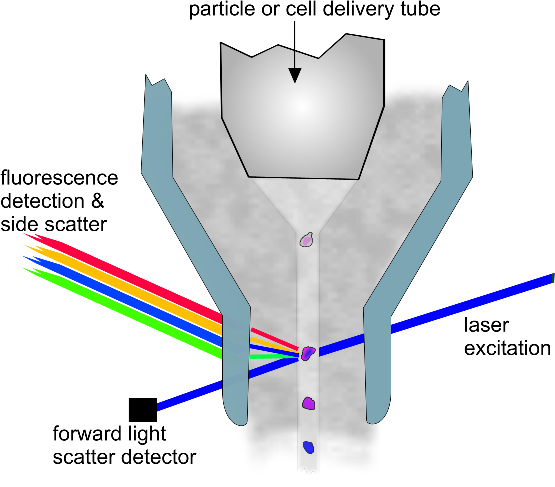
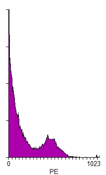

|
An example of a "2-color" display from a flow cytometer - in this case the FITC and the PE represent two different antigens on a lymphocyte surface
Example of how antibodies bind to specific receptors on lymphocytes - these antibodies can have colored tags.  A multipanel display of MABs on cells
 This is the key part of a flow cytometer - you can see cells in the middle stream of fluid - the blue line shows the laser excitation and where it strikes the cells, a signal is sent out to several detectors that allow us to identify what the cells are. |
CD4 Testing TodayFollowing the invention of the cell sorter by Mack Fulwyler in 1965, a revolution occurred within the world of immunology primarily driven by the innovations of many individuals such as Len Herzenberg. Cytometry has matured into a powerful technology in medical research and clinical practice. Recently, Dr. Herzenberg was honored as the Kyoto Prize winner for his contributions to cytometry. This demonstrates the importance of cytometry in the world of medicine.
CD4 testing is a normal practice in the clinical laboratory. Flow cytometry is a standard technique used in virtually every hospital and research institution around the world. While the techniques are straightforward, they are not totally simple as we apply them in clinical practice. There is a need for many controls, and a great deal of automated technology is employed to accomplish the measurements.
Needless to say, the cost of doing these tests is relatively high.
Today, however, there are between 30 and 40 million individuals in resource-poor nations infected with the HIV virus who desperately need to receive antiviral therapy. There are two primary reasons why they don't get it. First, the cost is high. Many individuals are working hard to reduce the cost of this therapy. Second, in order to receive therapy, each individual must be monitored for his/her CD4 levels. This is primarily done by flow cytometry. Unfortunately flow cytometry is complex and expensive in todays technology-focused world.
How a CD4 test is done today?CD4 testing is performed by a flow cytometer. This is a device that is really quite complex as it is used in modern research laboratories or in clincal pathology centers. Essentially, you have a small tube of suspended cells (usually blood) which is treated with a reagent in such a way that the CD4 cells are labeled to identify themselves. In the reagent is an antibody which is a molecule that can specifically attached to a certain type of cell, a CD4 cell. Certain molecules (call fluorochromes) are attached to the antibody (like the green dots on the left plot), when we fire a laser beam at the cells, the ones with the attached molecules send out a signal identifying themseleves. This signal is called fluorescence and we can easily measure this with some sensitive detectors. You can also change colors of fluorescence and add "red" colors to the antibodies so that you can make two measurements at the same time. If you push hundreds or thousands of cells past the laser very quickly, you can get a very accurate count of all the cells that are present. This is how we measure CD4 cells. CD, by the way, means "cluster of differentiation" and that simply means that this molecule can be classified into a well defined group of cells. In our case, it is cluster of differentiation 4 - or a special helper T cell.
How do you interpret the results?First the data are collected in the flow cytometer and evaluated by plotting each point in a histogram. Shown below at right is a typical histogram. You can see that there appears to be two peaks. The first peak is considered to represent cells that have no specific binding to the probe in which we are interested. The second peak is what we call "positive" - thus if these were CD4 cells, they would be called CD4+. From this histogram we obtain numbers for each component. Now we have a value that we can define how many CD4 cells we have in a sample. While its a little more complcated than it appears, it's not rocket science. Now, you can make this really complicated. If you want to prove, beyond all reasonable doubt that you have only a certain type of cell and no contaminants, you could add more reagents to classify each type of cell in the population. In the field of cytometry, we call this multiple labeling - or multi-color fluorescence as you can see in the multi-color histograms on the left.
Where do the reagents come from?As we mentioned earlier, we use what are called monoclonal antibodies (MABs) that are conjugated (labeled) with fluorescent molecules that we can easily see with a flow cytometer. These MABs are very special molecules that have to be manufactured in a very careful way. They are quite expensive and in many cases, it is the cost of the reagents that makes a test expensive, althought it is also true that the instruments are very expensive.
How does the flow cytometer work?A laser beam (the blue line) passes through a chamber where a stream of fluid is flowing. Inside the stream are lots of cells, and some of them have the different labels on them as described above. When a cell with a fluorescent molecule on it passes throught the laser beam, photons are emitted and these are measured on detectors (see the different colors going out the back of the chamber). Using a scatter signal it is also possible to determine the morphological charactistics (shape, size, etc.) of each cell.
Watch a couple of Introductory lectures on the principles of flow cytometryThese lectures are around 1 hour each. They start at the very fundamentals and work through to applications. They are primarily designed for senior-level undergraduates, graduate students, and laboratory technicians. Although they assume some technical knowledge, the basics are defined and most people could find them useful regardless of their technical expertize..
Basics of Flow Cytometry I (select e-lectures, number 1) Basics of Flow Cytometry II (select E-lectures, number 2)
|
||||
|